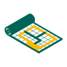
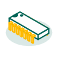

This course introduces students to the foundational concepts of computer and digital systems as they relate to modern computing environments. Students gain an understanding of how hardware and software interact, how data is represented and processed, and how operating systems and file systems organize and manage information. Topics include number systems, digital logic, logic circuits, analog and digital signals, computer architecture, data storage, networks, and cloud systems.
Lab 01
System Investigation
Investigation of computer hardware and software
Lab 02
DTMF Interception & Log Recovery
Analog and digital signals
Lab 03
Byte Hunter: The Suspicious USB
Number systems, ASCII, two’s complement
Lab 04
Gate Crashers
Gates, truth tables, NAND universality

Lab 05
Blueprint
Logic circuit design, Boolean simplification, K-maps

Lab 06
Chip Shop
Adders, multiplexers and latches on 74xx chips
Lab 07
Stored Program
Von Neumann machine: fetch, decode, execute
Lab 08
Cartridge
ROM on the bus: reading bytes, file headers, checksums, battery saves
Lab 09
Address Bus
16-bit address bus, mirrors, headerless cartridges, pointers
Lab 10
Assembler
An assembler in Python for the Lab 9 machine: text to bytes, two passes
Lab 11
Your Game
A game of your own for RamPlay, made in Ram65 and published to the cartridge shop